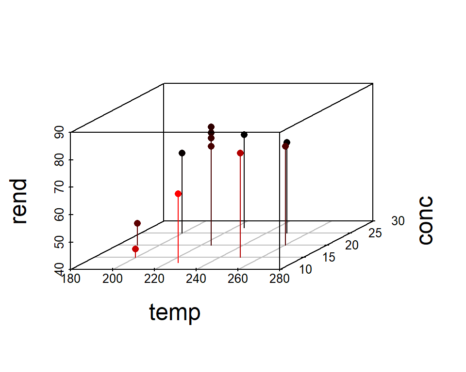

7 Modelos polinomiales
En este capítulo se presenta una descripción breve de como ajustar modelos polinomiales con R.
Funciones I() y poly()
Las funciones I() y poly() son utilizadas para incluir elementos polinomiales en un modelo de regresión.
- Use
I()para incluir un término específico en un modelo, por ejemplo,I(x^3)indica que queremos solo el término \(x^3\). - Use
poly()para incluir todos los términos de un polinomio hasta cierto grado, por ejemplo,poly(x, degree=3)indica que queremos incluir \(x\), \(x^2\) y \(x^3\).
Ejemplo
Como ilustración vamos a usar los datos del ejemplo 7.1 del libro de Montgomery, Peck and Vining (2003). En el ejemplo 7.1 se busca crear un modelo que explique la resistencia a la tensión de una bolsa en función del porcentaje de madera dura.
A continuación se muestran los datos usados en el ejemplo.
datos <- structure(list(concentracion = c(1, 1.5, 2, 3, 4, 4.5, 5, 5.5,
6, 6.5, 7, 8, 9, 10, 11, 12, 13, 14, 15), resistencia = c(6.3, 11.1,
20, 24, 26.1, 30, 33.8, 34, 38.1, 39.9, 42, 46.1, 53.1, 52, 52.5, 48,
42.8, 27.8, 21.9)), class = "data.frame", row.names = c(NA, -19L))El siguiente código es usado para construir el diagrama de dispersión entre las variables resistencia y concentración.

De este diagrama se ve claramente que hay una relación de tipo no lineal entre las variables. ¿Será mejor un modelo de grado 2 que un modelo de grado 1?
Vamos a ajustar ambos modelos y luego los comparamos, el elemento cuadrático lo vamos a crear usando la función I().
mod1 <- lm(resistencia ~ concentracion, data=datos)
mod2 <- lm(resistencia ~ concentracion + I(concentracion^2), data=datos)Para hacer una comparación de ambos modelos vamos a agregar al diagrama de dispersión original la recta y la curva asociadas a los modelos mod1 y mod2 respectivamente.
ggplot(datos, aes(x=concentracion, y=resistencia)) +
geom_point() +
geom_smooth(method='lm', formula=y~x, se=FALSE, col='dodgerblue1') +
geom_smooth(method='lm', formula=y~x+I(x^2), se=FALSE, col='tomato') +
theme_light()
De la figura anterior se observa claramente que el modelo lineal no es capaz de explicar los datos, se observan zonas donde el mod1 siempre sub-estima y otras zonas donde siempre sobre-estima.
Vamos a comparar ahora los modelos por medio de un análisis de varianza, el código para hacer esto es el siguiente.
## Analysis of Variance Table
##
## Model 1: resistencia ~ concentracion
## Model 2: resistencia ~ concentracion + I(concentracion^2)
## Res.Df RSS Df Sum of Sq F Pr(>F)
## 1 17 2373.46
## 2 16 312.64 1 2060.8 105.47 1.894e-08 ***
## ---
## Signif. codes: 0 '***' 0.001 '**' 0.01 '*' 0.05 '.' 0.1 ' ' 1El valor-P de la tabla anterior nos indica que es mejor mod2.
A continuación se analizan los residuales (\(e_i\) vs \(\hat{y}_i\)) para ambos modelos.
par(mfrow=c(1, 2))
plot(mod1, which=1, caption='Modelo lineal')
plot(mod2, which=1, caption='Modelo cuadratico')
En la parte izquierda de la figura anterior se ve que para el modelo lineal mod1 los residuales presentan una curvatura evidente, esto significa que falta un elemento de grado dos en la estructura del modelo mod1. Al lado derecho de la figura están los residuales para el modelo cuadrático, de esta figura se observa que los residuales son menores (en valor absoluto) que los residuales del mod1 y que no presentan un patrón claro como en el caso anterior.
Otro punto a favor del modelo cuadrático es su \(R^2_{Adj}\) que es de 0.897 frente al 0.265 del modelo lineal.
De lo anterior se concluye que es mejor el modelo cuadrático para explicar la resistencia en función de la concentración, el modelo ajustado está dado en la siguiente expresión.
\[\begin{align} {Resi}_i &\sim N(\hat{\mu}_i, \sigma^2), \\ \hat{\mu}_i &= -6.674 + 11.764 Conc - 0.635 Conc^2, \\ \hat{\sigma} &= 4.42 \end{align}\]
Ejemplo
Como ilustración vamos a usar los datos del ejemplo 7.2 del libro de Montgomery, Peck and Vining (2003). En el ejemplo 7.2 se busca crear un modelo que explique la caída de voltaje en función del tiempo por medio dos posibles modelos:
- un modelo polinomial de grado tres.
- un spline cúbico con 2 nodos en \(t=6.5\) y \(t=13\).
Los datos utilizados en el ejemplo se muestran a continuación.
drop <- c(8.33, 8.23, 7.17, 7.14, 7.31, 7.60, 7.94, 8.30, 8.76, 8.71, 9.71,
10.26, 10.91, 11.67, 11.76, 12.81, 13.30, 13.88, 14.59,
14.05, 14.48, 14.92, 14.37, 14.63, 15.18, 14.51, 14.34,
13.81, 13.79, 13.05, 13.04, 12.60, 12.05, 11.15, 11.15,
10.14, 10.08,9.78,9.80,9.95,9.51)
time <- seq(from=0, to=20, by=0.5)
datos <- data.frame(time=time, drop=drop)Usando los datos anteriores podemos construir un diagrama de dispersión para entender la relación de las variables y la ubicación de los posibles nodos (sitios donde hay cambio de curvatura).
plot(datos, ylab="Voltage drop", xlab="Time (seconds)", pch=19, ylim=c(0, 15))
abline(v=6.5, lty="dotted", col='tomato')
abline(v=13, lty="dotted", col='tomato')
text(x=6.5, y=0.3, 't=6.5', col='tomato')
text(x=13, y=0.3, 't=13', col='tomato')
Primero vamos a ajustar el modelo polinomial cúbico, el codigo necesario es el siguiente.
##
## Call:
## lm(formula = drop ~ time + I(time^2) + I(time^3), data = datos)
##
## Residuals:
## Min 1Q Median 3Q Max
## -1.3503 -0.7340 -0.1859 0.6440 1.8390
##
## Coefficients:
## Estimate Std. Error t value Pr(>|t|)
## (Intercept) 6.4910163 0.5336473 12.163 1.71e-14 ***
## time 0.7031952 0.2339552 3.006 0.004738 **
## I(time^2) 0.0340179 0.0273762 1.243 0.221829
## I(time^3) -0.0033072 0.0008992 -3.678 0.000743 ***
## ---
## Signif. codes: 0 '***' 0.001 '**' 0.01 '*' 0.05 '.' 0.1 ' ' 1
##
## Residual standard error: 0.9335 on 37 degrees of freedom
## Multiple R-squared: 0.8773, Adjusted R-squared: 0.8673
## F-statistic: 88.14 on 3 and 37 DF, p-value: < 2.2e-16De la anterior salida se pueden destacar los siguientes resultados:
- Los residuales varían entre -1.35 y 1.83.
- El \(R^2_{Adj}=0.8673\).
- La estimación de \(\sigma\) es 0.9335.
- El término \(t^3\) es significativo en el modelo a un nivel de significancia del 5%, eso implica que todos los términos de grado 2 y grado 1 deben permanecer en el modelo, sean o no significativos.
Ahora vamos a ajustar el modelo spline cúbico con 2 nodos en \(t=6.5\) y \(t=13\), el codigo necesario es el siguiente.
xplus <- function(x) ifelse(x >= 0, x, 0) # Auxiliar function
time6.5 <- xplus(time - 6.5)
time13 <- xplus(time - 13)
mod2 <- lm(drop ~ time + I(time^2) + I(time^3) + I(time6.5^3) + I(time13^3), data=datos)
summary(mod2)##
## Call:
## lm(formula = drop ~ time + I(time^2) + I(time^3) + I(time6.5^3) +
## I(time13^3), data = datos)
##
## Residuals:
## Min 1Q Median 3Q Max
## -0.45168 -0.18499 -0.03547 0.20577 0.61694
##
## Coefficients:
## Estimate Std. Error t value Pr(>|t|)
## (Intercept) 8.465678 0.200520 42.219 < 2e-16 ***
## time -1.453124 0.181586 -8.002 2.04e-09 ***
## I(time^2) 0.489889 0.043018 11.388 2.54e-13 ***
## I(time^3) -0.029467 0.002848 -10.347 3.44e-12 ***
## I(time6.5^3) 0.024706 0.004039 6.116 5.43e-07 ***
## I(time13^3) 0.027112 0.003578 7.577 6.98e-09 ***
## ---
## Signif. codes: 0 '***' 0.001 '**' 0.01 '*' 0.05 '.' 0.1 ' ' 1
##
## Residual standard error: 0.2678 on 35 degrees of freedom
## Multiple R-squared: 0.9904, Adjusted R-squared: 0.9891
## F-statistic: 725.5 on 5 and 35 DF, p-value: < 2.2e-16De la anterior salida se pueden destacar los siguientes resultados:
- Los residuales están más cerca del cero cuando se comparan con los residuales del
mod1. - El \(R^2_{Adj}=0.9891\) aumentó bastante.
- La estimación de \(\sigma\) es 0.2678.
- Todos los términos son significativos.
Para hacer una comparación visual de ambos modelos vamos a construir nuevamente el diagrama de dispersión original y agregaremos las curvas ajustadas de ambos modelos. El código para hacer esto se muestra a continuación.
plot(datos, ylab="Voltage drop", xlab="Time (seconds)", pch=19, ylim=c(0, 15))
i <- order(time)
lines(time[i], fitted(mod1)[i], col=2, lwd=3)
lines(time[i], fitted(mod2)[i], col=4, lwd=3)
legend("bottomright", lwd=3, col=c(4,2), bty="n",
legend=c("Cubic spline model", "Cubic polynomial model"))
Al observar la figura anterior se nota con claridad que el modelo cubic spline (azul) logra explicar mejor los datos, tanto en los extremos como en la parte central, eso significa que es mejor usar el modelo cubic spline para hacer predicciones futuras.
Usando la tabla de resumen obtenida con summary(mod2) se puede escribir el modelo cubic spline ajustado así:
\[\begin{align} {Drop}_i &\sim N(\hat{\mu}_i, \sigma^2), \\ \hat{\mu}_i &= 8.4657 -1.4531 t + 0.4899 t^2 -0.0295 t^3 + 0.0247 (t-6.5)^3_{+} + 0.0271 (t-13)^3_{+}, \\ \hat{\sigma} &= 0.2678 \end{align}\]
Función bs
La función bs del paquete splines se puede utilizar para incluir splines básicos en un modelo de regresión, la estructura básica de la función se muestra a continuación.
Los argumentos básicos de la función son:
x: the predictor variable. Missing values are allowed.df: degrees of freedom.knots: the internal breakpoints that define the spline.degree: degree of the piecewise polynomial—default is 3 for cubic splines.
Ejemplo
En este ejemplo vamos a retomar el ejemplo 7.2 del libro de Montgomery, Peck and Vining (2003) y que fue explicado anteriormente. El objetivo es repetir el modelo mod2 pero con la ayuda de la función bs, a ese nuevo modelo lo vamos a llamar mod3. El código necesario se muestra a continuación.
##
## Call:
## lm(formula = drop ~ bs(time, knots = c(6.5, 13), degree = 3),
## data = datos)
##
## Residuals:
## Min 1Q Median 3Q Max
## -0.45168 -0.18499 -0.03547 0.20577 0.61694
##
## Coefficients:
## Estimate Std. Error t value Pr(>|t|)
## (Intercept) 8.4657 0.2005 42.219 < 2e-16
## bs(time, knots = c(6.5, 13), degree = 3)1 -3.1484 0.3934 -8.002 2.04e-09
## bs(time, knots = c(6.5, 13), degree = 3)2 4.3532 0.2843 15.312 < 2e-16
## bs(time, knots = c(6.5, 13), degree = 3)3 8.5518 0.3691 23.169 < 2e-16
## bs(time, knots = c(6.5, 13), degree = 3)4 0.5990 0.3059 1.958 0.058192
## bs(time, knots = c(6.5, 13), degree = 3)5 1.2414 0.2871 4.324 0.000121
##
## (Intercept) ***
## bs(time, knots = c(6.5, 13), degree = 3)1 ***
## bs(time, knots = c(6.5, 13), degree = 3)2 ***
## bs(time, knots = c(6.5, 13), degree = 3)3 ***
## bs(time, knots = c(6.5, 13), degree = 3)4 .
## bs(time, knots = c(6.5, 13), degree = 3)5 ***
## ---
## Signif. codes: 0 '***' 0.001 '**' 0.01 '*' 0.05 '.' 0.1 ' ' 1
##
## Residual standard error: 0.2678 on 35 degrees of freedom
## Multiple R-squared: 0.9904, Adjusted R-squared: 0.9891
## F-statistic: 725.5 on 5 and 35 DF, p-value: < 2.2e-16Al comparar los resultados de summary(mod2) con summary(mod3) vemos sólo una pequeña coincidencia. ¿Serán iguales, similares o diferentes el mod2 y mod3?
Para compararlos vamos a crear nuevamente el diagrama de dispersión original y vamos a agregar las curvas ajustadas para los tres modelos. El modelo mod1 estará en color rojo, el modelo mod2 en color azul y línea gruesa, y el modelo mod3 en color naranja y línea delgada. a continuación el código usado.
plot(datos, ylab="Voltage drop", xlab="Time (seconds)", pch=19, ylim=c(0,15))
lines(time[i], fitted(mod1)[i], col='red', lwd=3)
lines(time[i], fitted(mod2)[i], col='blue', lwd=6)
lines(time[i], fitted(mod3)[i], col='orange', lwd=1)
legend("bottomright", lwd=c(3, 6, 2), col=c('red', 'blue', 'orange'),
legend=c("Cubic polynomial model",
"Cubic spline manually",
"Using bs()"), bty="n")
abline(v=c(6.5, 13), lty='dotted', col="tomato") # adding cutpoints
De la figura anterior se observa que el modelo mod3 coincide con el modelo mod2.
Función lowess
La función lowess (LOcally WEighted Scatterplot Smoothing) permite constuir una curva suavizada a partir de muchas regresiones de orden uno localizadas, usando una ventana que incluye un porcentaje f de puntos. A continuación se muestra una figura ilustrativa para entender lo que hace lowess.

(#fig:animacion_lowess)Ilustración de lowess.
La estructura de la función lowess se muestra a continuación.
Los argumentos básicos de la función son:
x: vector con los valores de la covariable.y: vector con los valores de la variable respuesta.f: porcentaje de puntos dentro de la ventana, por defecto es 2/3.
Ejemplo
Como ejemplo vamos a usar los datos de la base Prestige que se encuentra en el paquete car. Queremos constuir un modelo lowess para explicar la variable prestige en función de la variable income. A continuación el código para crear el diagrama de dispersión que muestra la relación entre las variables.

Para crear el modelo lowess a los datos anteriores se usa el siguiente código.
El objeto mod_lowess es una lista con las coordenadas \(x\) e \(y\) por donde pasa la curva suavizada. A continuación el código para agregar la curva al diagrama de dispersión.
plot(prestige ~ income, xlab="Average Income",
ylab="Prestige", data=Prestige, pch=19)
lines(mod_lowess, lwd=4, col='tomato')
De la figura anterior vemos que la curva suavizada logra capturar el patrón de variación de los datos.
¿Qué sucede con la curva cuando cambiamos el parámetro f?
El efecto de f se puede ver con claridad en la siguiente figura. Cuando f es pequeño la curva es muy rugosa, para valores altos de f la curva se suaviza.

(#fig:effect_of_f)Efecto de f en lowess.
Función loess
La función loess (LOcally Estimated Scatterplot Smoothing) permite constuir una curva o superficie suavizada a partir de muchas regresiones de orden uno o dos localizadas, usando una ventana que incluye un porcentaje span de puntos. La función loess es una generalización de lowess.
La estructura de la función loess se muestra a continuación.
loess(formula, data, weights, subset, na.action, model = FALSE,
span = 0.75, enp.target, degree = 2,
parametric = FALSE, drop.square = FALSE, normalize = TRUE,
family = c("gaussian", "symmetric"),
method = c("loess", "model.frame"),
control = loess.control(...), ...)Los argumentos básicos de la función son:
formula: fórmula usual (y ~ x1 + x2 + x3 + x4) para indicar la variable respuesta y las covariables. Máximo se pueden incluir 4 covariables.data: marco de datos con las variables.degree: el grado de los polinomios locales a usar, se puede elegir entre grado 1 o grado 2.span: vector con los valores de la variable respuesta.
Los otros parámetros tienen valores por defecto que se pueden cambiar para obtener mejores ajustes.
Ejemplo
Como ejemplo vamos a usar los datos de la base Prestige que se encuentra en el paquete car. Queremos constuir un modelo loess para explicar la variable prestige en función de las variables income y education. A continuación el código para crear el diagrama de dispersión que muestra la relación entre las variables.
library(plotly)
plot_ly(x=Prestige$income,
y=Prestige$education,
z=Prestige$prestige, type="scatter3d", color=Prestige$prestige) %>%
layout(scene = list(xaxis = list(title = 'Income'),
yaxis = list(title = 'Education'),
zaxis = list(title = 'Prestige')))Para crear el modelo loess a los datos anteriores se usa el siguiente código.
A continuación el código para agregar la superficie al diagrama de dispersión. Los objetos inc y edu son secuencias de valores en el rango de los datos originales. El objeto newdata es un marco de datos con todas las combinaciones de valores de inc y edu. El objeto fit.prestige es una matriz con los valores estimados de la variable prestige. Luego todos esos objetos entran a la función plot_ly.
inc <- with(Prestige, seq(min(income), max(income), len=25))
edu <- with(Prestige, seq(min(education), max(education), len=25))
newdata <- expand.grid(income=inc, education=edu)
fit.prestige <- matrix(predict(mod_loess, newdata), 25, 25)
plot_ly(x=inc, y=edu, z=fit.prestige) %>% add_surface() %>%
layout(scene = list(xaxis = list(title = 'Income'),
yaxis = list(title = 'Education'),
zaxis = list(title = 'Prestige')))Es posible crear un gráfico con los puntos originales y la superficie del modelo, a continuación el código necesario.
library("plot3D")
scatter3D(x=Prestige$income,
y=Prestige$education,
z=Prestige$prestige, ticktype="detailed", pch=20,
bty="f", colkey=FALSE, phi=30, theta=45, type="h",
xlab='Income',
ylab='Education',
zlab='Prestige',
surf=list(x=inc, y=edu, z=fit.prestige,
NAcol="black", shade=0.1))
¿Qué sucede con la superficie cuando cambiamos el parámetro span?
El efecto de span se puede ver con claridad en la siguiente figura. Cuando span es pequeño la superficie es muy rugosa, para valores altos de span la suferficie se suaviza.

(#fig:effect_of_span)Efecto de span en loess.
Optimización con superficies de respuesta
Cuando se tiene una superficie de respuesta, obtenida por métodos paramétricos o no paramétricos, dos preguntas posibles son:
- ¿Cuáles valores de las covariables maximizan la variable respuesta?
- ¿Cuáles valores de las covariables minimizan la variable respuesta?
Ambos problemas se denominan problemas de optimización. Cuando se tiene una o dos covariables, el problema es sencillo, y se puede resolver dibujando la curva o la superficie, y visualmente se puede obtener el valor o valores de las \(x'\)s que optimizan la variable respuesta. Cuando se tienen tres o más covariables es necesario usar métodos de optimización, algunas de las funciones más usuales de R para hacer esto son:
- función
nlminb, - función
optim.
Función nlminb
La estructura de esta función es la siguiente:
nlminb(start, objective, gradient = NULL, hessian = NULL, ...,
scale = 1, control = list(), lower = -Inf, upper = Inf)Los parámetros de la función son:
start: vector con los valores donde inicia la búsqueda.objective: función a MINIMIZAR. El primer argumento de esta función debe ser un vector y ella debe entregar un valor.gradient: función opcional que calcula el gradiente.hessian: función opcional que calcula la hessiana.lower: vector con los valores mínimos de la región de búsqueda.upper: vector con los valores máximos de la región de búsqueda.
Ejemplo
Vamos a utilizar aquí unos datos de un experimento en el cual se estudió la influencia de la temperatura y la concentración sobre el rendimiento obtenido en un proceso químico. A continuación los datos del experimento.
temp <- c(200, 250, 200, 250, 189.65, 260.35, 225, 225, 225, 225, 225, 225)
conc <- c(15, 15, 25, 25, 20, 20, 12.93, 27.07, 20, 20, 20, 20)
rend <- c(43, 78, 69, 73, 48, 76, 65, 74, 76, 79, 83, 81)Vamos a construir un diagrama de dispersión para ver la relación de las variables.
library(scatterplot3d)
scatterplot3d(x=temp, y=conc, z=rend, pch=16, cex.lab=1.5,
highlight.3d=TRUE, type="h")
El objetivo es ajustar el siguiente modelo:
\[\begin{align} y_i &\sim N(\mu_i, \sigma^2), \\ \mu_i &= \beta_0 + \beta_1 temp_{i} + \beta_2 conc_{i} + \beta_3 temp_i^2 + \beta_4 conc_i^2 + \beta_5 temp \times conc, \\ \sigma^2 &= \text{constante} \end{align}\]
El código para ajustar el modelo es el siguiente.
Usando el modelo ajustado mod es posible dibujar la superfice de respuesta para determinar de forma visual los valores que maximizan el rendimiento.
# Se crean 30 valores de las variables para crear la rejilla
Temperatura <- seq(from=189.65, to=260.35, length.out=30)
Concentracion <- seq(from=12.93, to=27.07, length.out=30)
# Rend es la funcion a dibujar
Rend <- function(temp, conc) {
res <- coef(mod) * c(1, temp, conc, temp^2, conc^2, temp * conc)
sum(res)
}
Rend <- Vectorize(Rend) # La funcion a dibujar debe estar vectorizada
# La matriz Rendimiento con las alturas de la superficie se crea con outer
Rendimiento <- outer(Temperatura, Concentracion, Rend)
# Para dibujar la superficie de respuesta
persp(x=Temperatura, y=Concentracion, z=Rendimiento,
theta=40, phi=30, ticktype = "detailed", col='salmon1')
Se puede también construir un gráfico con curvas de nivel para determinar de forma visual los valores que maximizan el rendimiento.
contour(x=Temperatura, y=Concentracion, z=Rendimiento,
nlevels=10, col=gray(0.3), lwd=2, lty='solid',
xlab='Temperatura', ylab='Concentracion', las=1)
Un gráfico de calor es también útil para determinar de forma visual los valores que maximizan el rendimiento.
filled.contour(x=Temperatura, y=Concentracion, z=Rendimiento,
nlevels=10, xlab='Temperatura', ylab='Concentracion',
las=1, color.palette = cm.colors)
Para encontrar los valores exactos que maximizan el rendimiento se usa la función nlminb. A continuación se crea la función minus_rend que representa \(-f(x)\) la cual va a ser minimizada. Se define el punto de inicio de la búsqueda en el objeto inicio y luego el resultado de nlminb se almacena en el objeto res.
minus_rend <- function(x) {
temp <- x[1]
conc <- x[2]
new.data <- data.frame(temp=c(1, temp), conc=c(1, conc))
-predict(mod, new.data)[2]
}
inicio <- c(192, 15) # valores iniciales para la busqueda
names(inicio) <- c('Temperatura', 'Concentracion') # Colocando nombres
res <- nlminb(start=inicio, objective=minus_rend,
lower=c(189.65, 12.93), # minimos de las variables
upper=c(260.35, 27.07), # maximos de las variables
control=list(trace=0))
res$par # Valores optimos## Temperatura Concentracion
## 238.95190 19.94697## [1] 82.46933Polinomios ortogonales
Estamos preparando el contenido, revisar luego.